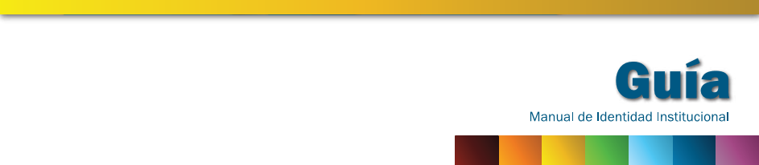

OBJETO VIRTUAL DE ARENDIZAJE
PARA CREACION DE PAGINAS WEB CON HTML5

M E N U P R I N C I P A L
Titulo: Ingeniero de Sistemas
Nivel de formación: Profesional
Creditos academicos: 167
El Plan de Estudios es el conjunto de cursos basicos y electivos, y de actividades formativas, organizadas por campos o areas de formacion, y orientados por nucleos problemicos de orden profesional, que superen las fronteras de las disciplinas y fomenten la busqueda de nuevas relaciones interdisciplinares; con el objeto de capacitar al estudiante para ser un profesional con autonomia intelectual, eficiente, emprendedor y solidario. Tiene una duracion de 167 creditos academicos , de los cuales 124 creitos corresponden al ciclo basico obligatorio y 43 creditos a cursos electivos, que el estudiante puede tomar de acuerdo con sus necesidades y expectativas.